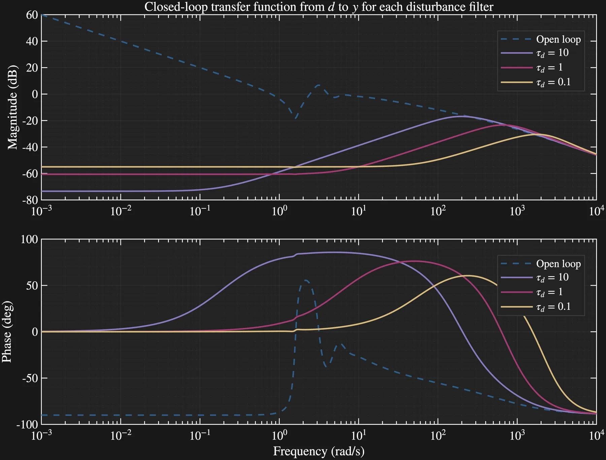

01 · Distributed-parameter systems · Apr-Jun 2026
Reduce the model.
Keep the behavior.
A boundary-actuated damped-wave PDE became a practical LQG study: discretize the field, shape disturbances, design output feedback, then ask how much controller order the full plant really needs.
- Built a 99-state finite-difference plant with frequency-shaped disturbances and measurement noise.
- Designed LQR and Kalman-filter controllers for three disturbance bandwidths.
- Tested balanced-truncation orders 1-10 on the unreduced plant across damping regimes.
Transferable method: distributed-field modeling, reduction, disturbance estimation, and output feedback—the same toolkit used when state is spread across a thermal or energy system. This plant is a simulated linear fluid, not a thermal experiment.

- 99
- plant states
- 1-10
- reduced orders
- 3
- noise bandwidths
Reduction exposed a real boundary: 29/30 tested controllers remained stable at highly damped β = 0.1, compared with 19/30 for the lightly damped β = 0.001 plant.